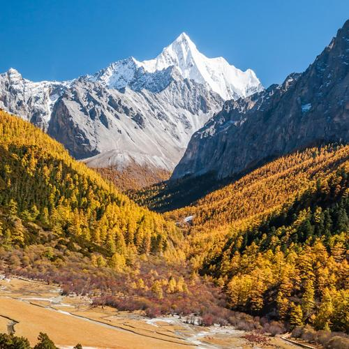
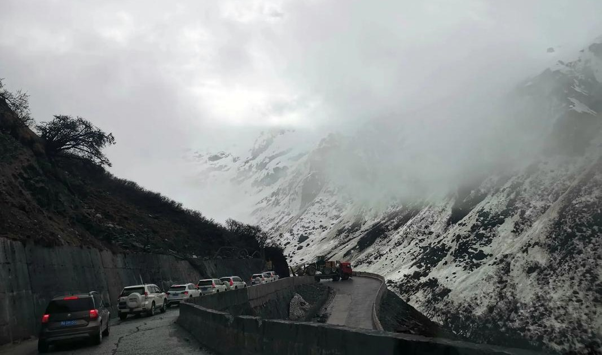
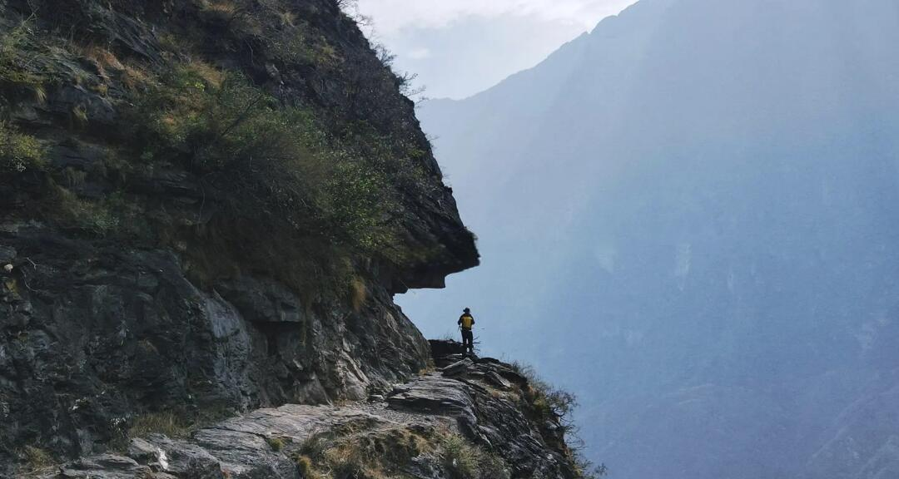
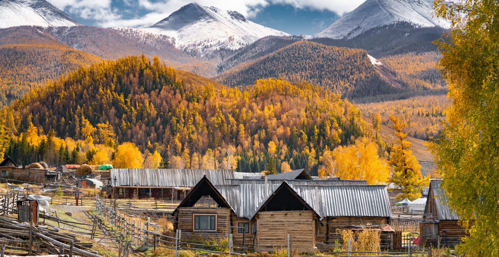
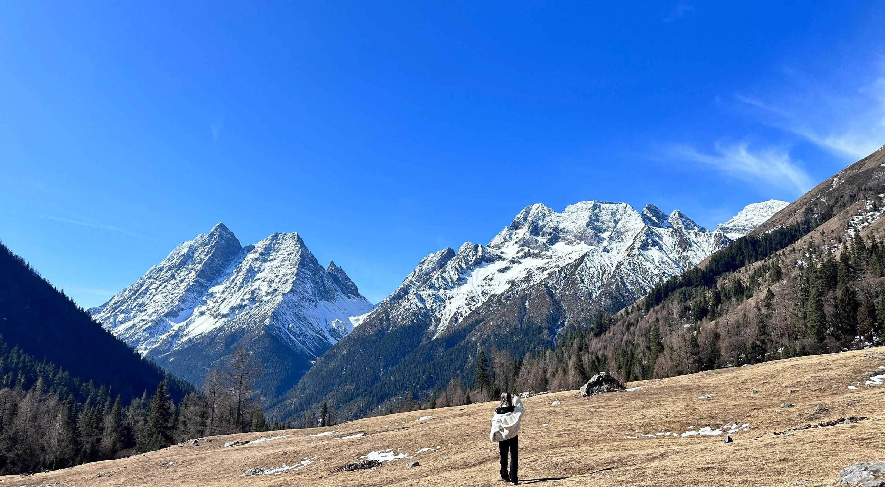

热门徒步路线

稻城亚丁徒步
四川
高级
7-10天
夏秋季
探索香格里拉最后的秘境，领略壮丽的雪山、草甸和湖泊景观。这条经典路线穿越多个海拔4000米以上的垭口。
雨崩村徒步
云南
中级
5-7天
全年适宜
位于梅里雪山脚下的秘境村庄，徒步可到达冰湖和神瀑，体验原始森林、雪山冰川和藏族文化的完美结合。

墨脱徒步
西藏
专业级
10-15天
5-10月
中国最后通公路的县，穿越雅鲁藏布江大峡谷，从高原到热带雨林的垂直气候体验，极具挑战性和独特性。
黄山徒步
安徽
中级
2-3天
春秋季
中国十大名山之一，以奇松、怪石、云海、温泉四绝闻名于世，徒步登上莲花峰，俯瞰黄山全景。

虎跳峡徒步
云南
中级
2-3天
9-11月
世界十大经典徒步路线之一，沿着金沙江峡谷，感受壮观的峡谷风光和玉龙雪山的壮美，途经纳西族村庄。

喀纳斯徒步
新疆
中级
4-5天
6-9月
穿越北疆最美的原始森林和高山草甸，欣赏喀纳斯湖的神秘色彩，体验图瓦人村落的异域风情。

四姑娘山徒步
四川
高级
5-7天
秋季
四姑娘山由四座相连的山峰组成，被誉为"东方的阿尔卑斯"。徒步路线涵盖了高山草甸、冰川、湖泊等多样景观。
贡嘎转山
四川
专业级
7-10天
秋季
贡嘎山是四川第一高峰，贡嘎转山是中国经典的高海拔徒步路线之一，沿途可欣赏到贡嘎主峰及众多雪山的壮丽景色。